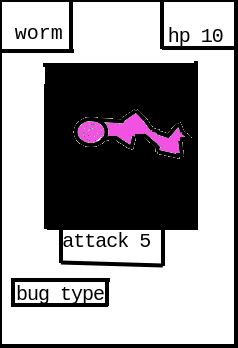
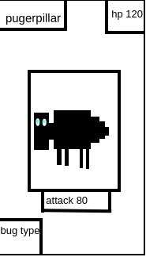

main cards
worm:
the worm is one of the most common cards and is not very powerfull
although its attack isn't too strong it is good at getting out of troble
quickly

pugerpillar:
pugerpillar is one of the best Kreetors and the first! Although
it looks fat it is very good at defending its self. For example if spidor
attacked it it would use his back legs to kick him out of the way like a
horse.

spidor: spidor is not the best but certenly not the worst, spidor is very venemous and could kill any Kreetor if enough of its venem got into their blood. Althoughit has to get very close to its enemy to attack which makes it vulnerable to Kreetors with long range attack.
Thease are only a few of are many cards.